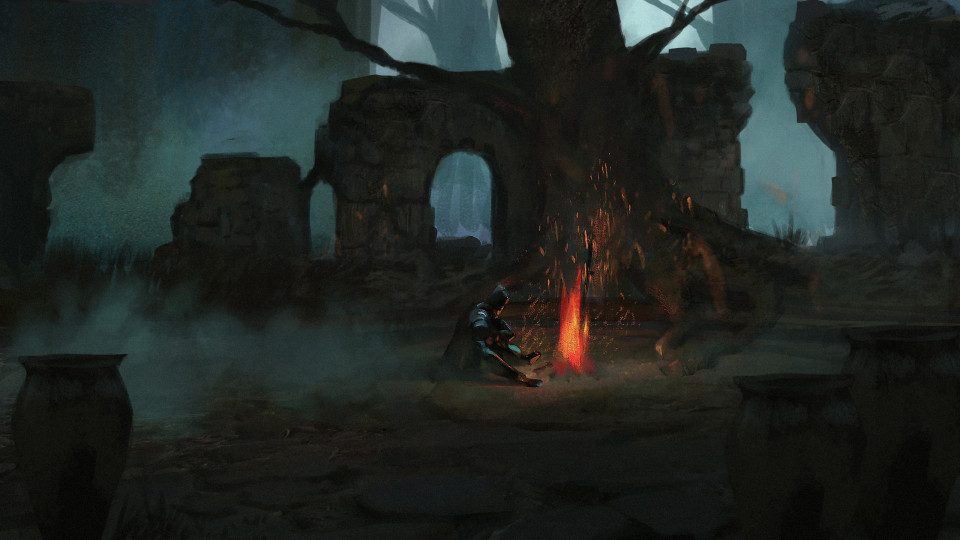

The Inner Journey of Dark Souls 2 by From Software
Majula Theme by Motoi Sakuraba and Yuka Kitamura delivers a sense of wonder and angst as you begin to engage a world of death and despair.

From Software has a reputation for creating the most difficult games of our generation. Dark Souls, Bloodborne, and the newly released Elden Ring all challenge the very core of your gaming skills from patience, timing, coordination, and sheer will-power.
A difficulty that satisfies even the deepest inner-pleasures of the psyche. When you embark on a From Software game (and dedicate your time and ultimate attention) you will enter a feeble and naive gamer, but upon completion you will have a new-found power and
courage to analyse and break the inner mechanics of every game you play after.